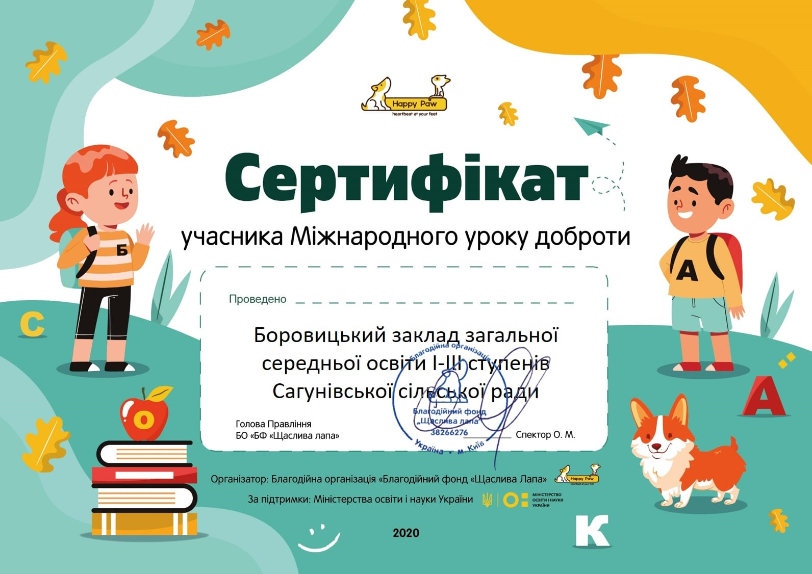
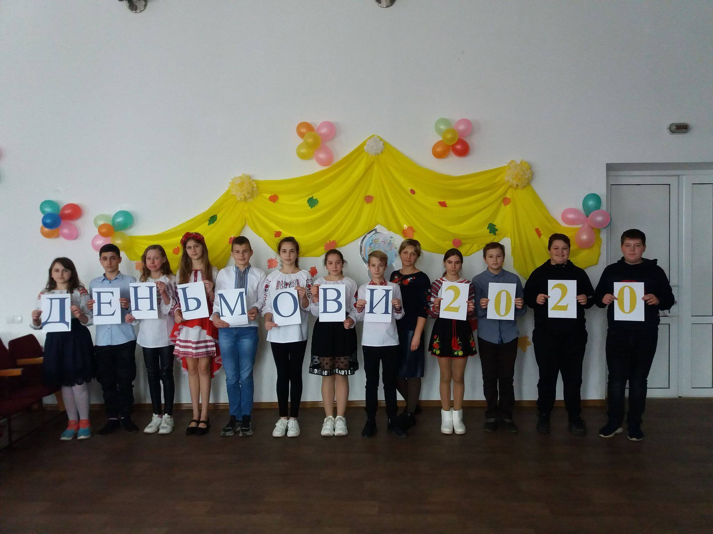
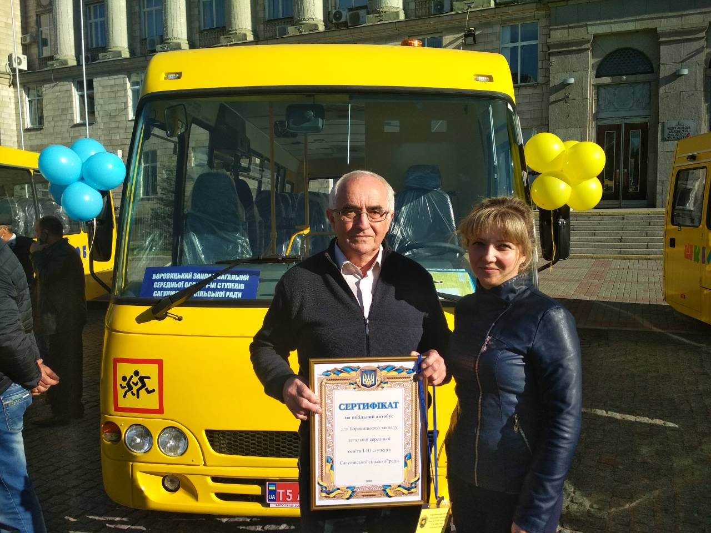
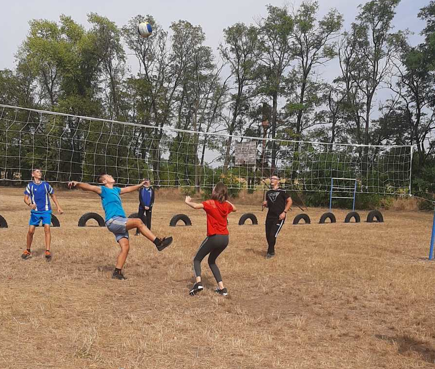
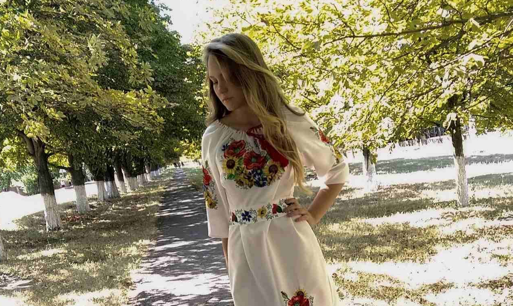

Новини
-

Урок доброти
Хочемо повідомити чудову новину: не дивлячись на виклики пандемії в цьому році ІІІ Всеукраїнський урок доброти набув статусу Міжнародного! Адже до уроків долучились педагоги та учні з 8 країн: Білорусі, Болгарії, Грузії, Казахстану, Латвії, Литви, Сербії та Хорватії. У рамках цієї акції всього проведено – 12 751 уроків доброти, і це у 1869 навчальних закладах. Боровицький ЗЗСО також став офіційним учасником І Міжнародного уроку доброти про гуманне та відповідальне ставлення до тварин (проведено 11 уроків доброти). Щиро дякуємо кожному з вас за прикладені зусилля, чудові фотографії, творчий підхід та оформлення класів, які ми побачили у фотозвітах!
-

День української писемності та мови
Сьогодні, 9 листопада, у День української писемності та мови, учні та вчителі Боровицького ЗЗСО приєдналися до написання ХХ Всеукраїнського радіодиктанту національної єдності, а також взяли участь у І етапі ХХІ Міжнародного конкурсу з української мови імені Петра Яцика
Детальніше -
Спорт і фізкультура знову: і в школі, і вдома
Черкаське обласне відділення Комітету з фізичного виховання та спорту оголошує для учнів онлайн-конкурс „Спорт і фізкультура знову: і в школі, і вдома“ у таких номінаціях:
1. Конкурс-змагання „Друг надійний в мене є – він рекорди всі поб'є!“ (юнаки, дівчата).
2. Конкурс-змагання „М’яч футбольний б’ю ногою, а жонглюю – головою“.
Юнаки – жонглювання футбольним м’ячем головою.
Дівчата – жонглювання футбольним м’ячем ногами (підйомами стопи).
3. Конкурс-змагання „Міцніші руки – у сильніших духом (юнаки)“.
4. Конкурс-змагання „ Я стрибаю вправно, вміло із скакалкою в руках!“ (дівчата).
5. Конкурс-змагання „ Хто спортом займається, той сили набирається“ (юнаки, дівчата).
За детальною інформацією звертатися до вчителя фізкультури Сущенка В.Г. -

У школах Черкащини – транспортне поповнення
15 жовтня 2020 року Боровицький ЗЗСО та ще 9 навчальних закладів Черкаської області отримали нові шкільні автобуси. Це стало можливим завдяки підтримці уряду та співфінансуванню з бюджетів громад.
Детальніше -

День захисника України
До Дня захисника України учні вшанували пам'ять земляка-боровичанина загиблого учасника АТО Слісенка М.М. та поклали квіти до меморіальної дошки. Пам'ятаємо наших героїв!!!
-

Долоньки моїх прав
У рамках тижня правових знань (з 5 по 9 жовтня) учні початкових класів були охоплені акцією «Долоньки моїх прав». Також вони переглянули цікаве дитяче відео про права дитини.Учні 3 класу разом з педагогом-організатором Чубар Т.В. провели тренінг «Квітковий калейдоскоп», де пригадали, на що вони мають право, а на що ні. А ще взяли участь у казковій вікторині, де розгадували загадки, які допомогли пригадати їм улюблені казки, та виконали основне завдання –намагалися зрозуміти, які права порушуються в казці по відношенню до головних героїв.
Детальніше -
День учителя
-
День бібліотек
Дорогі бібліотекарі та просто поціновувачі літератури, вітаємо вас з Днем бібліотек! Завдяки цим установам зв’язок між людиною і книгою все ще живий, хоча його і витісняють сучасні технології. Бажаємо, щоб все більше людей відвідувало читальні зали. Підтримуйте вітчизняних авторів і знайомтеся із зарубіжними. Пам’ятайте, що книга — найкращий співрозмовник, порадник і друг. Наш шкільний бібліотекар Ніна Михайлівна завжди в курсі всіх літературних новинок і її бібліотека наповнена цікавими книгами та допитливими читачами. Вітаємо зі святом і бажаємо всім черпати мудрість із книг!!!
Детальніше -

Краща спортивна зала
Колектив навчального закладу та особисто вчитель фізкультури Сущенко Василь Григорович отримали грамоту Інтернет-порталу рейтингу освітніх закладів України за зайняте І рейтингове місце серед 100 кращих ЗСО України у загальному заліку КОНКУРСУ "Краща спортивна зала ЗСО/ЗЗСО"-2020.
Детальніше -

Тиждень врожаю
Чарівниця-осінь радує восени своїми багатими врожаями. На цьому тижні і в нашому закладі проходив тиждень врожаю. Учні взяли участь у конкурсі малюнків «Дари осені», а також порадували всіх неперевершеними виробами та креативними композиціями з осінніх овочів, фруктів та ягід. Тут і лебеді з яблук, і кабачкова мама з колискою, і морквяні зайчата, і , навіть, сам пан Гарбуз-Коронавірус та багато іншого.
Детальніше -

Краса осінніх дарунків
Другий тиждень навчання у Боровицькому ЗЗСО проходив під назвою «Краса осінніх дарунків». Для учнів початкових класів було оголошено конкурс малюнків «Осінь-чарівниця». Найактивнішими були учні 2 та 3 класів. Як результат, грамотами нагороджені Передерій Людмила (2 клас),Чекерлан Анна(2 клас), Чигирик Ангеліна (2 клас), Чубар Маргарита(3 клас), Петровщенко Людмила (3 клас), Сьомін Артем(3 клас), Гирич Віка(3 клас). Для учнів 2-11 класів організовано виставку композицій квітів «Осінні фантазії». Усі учні школи взяли активну участь і наш заклад освіти майорів і радував зір різними осінніми композиціями. Учні 2 та 3 класу взяли участь у позакласному заході «Квіти України», де розповідали вірші, слухали цікаві легенди, співали пісні, розгадували загадки та переглядали пізнавальні відео.
Детальніше -

Олімпійський тиждень
Перший тиждень навчання стартував. І, традиційно, розпочали з Олімпійського тижня. Для всіх учнів школи було організовано та проведено спортивні заходи. Так, для учнів початкових класів вчителі провели цікаві естафети: «Швидкий м'яч», «Дружній круг», «Хто швидше». Учні середніх класів позмагалися у не менш цікавих спортивних конкурсах на спритність та швидкість. А серед старшокласників визначали найсильнішого юнака - перемогу здобув учень 11 класу Гладун Станіслав (підтягнувся 25 разів). Дівчата змагалися у вправі «Піднімання тулуба з положення лежачи (прес)», де перемогла учениця 11 класу Величко Анастасія. Також відбулися дружні зустрічі з футболу та волейболу між учнями в межах одного класу (9, 7, 11 класи). Бажаємо всім учням бути сильними і здоровими!!!
Детальніше -

Новий шкільний президент
Вітаємо нашого нового шкільного президента - Вікторію Коновалову, ученицю 9 класу. Бажаємо натхнення, творчих успіхів та легких починань у всіх справах!!! Нехай щастить!!!
-

День знань
Усі шляхи цього дня ведуть до школи. Розпочинається новий навчальний рік, який завжди означає відкриття нової, осяйної і часто нелегкої дороги – дороги до знань, до нових звершень. Особливим і, безперечно, визначальним у житті він стане для милих першачків, які, тримаючись за батьківські руки, вперше ступлять на незвіданий шлях. Не менш важливим він буде для одинадцятикласників, яким доведеться обирати професійну стежку. Яким буде їх вибір – залежить тільки від них. А ми завжди будемо поруч, щоб допомогти і підказати. Також вітаємо учнів 2-10 класів з початком нового навчального року, бажаємо міцного здоров’я та успіхів! Зі святом вітаємо вчителів, всіх працівників школи та батьків наших учнів! Нехай всі мрії та сподівання справджуються, а кожна мета буде досягнута! Нехай завжди з Вами буде поруч підтримка та розуміння Ваших близьких та знайомих! Зі святом!!!